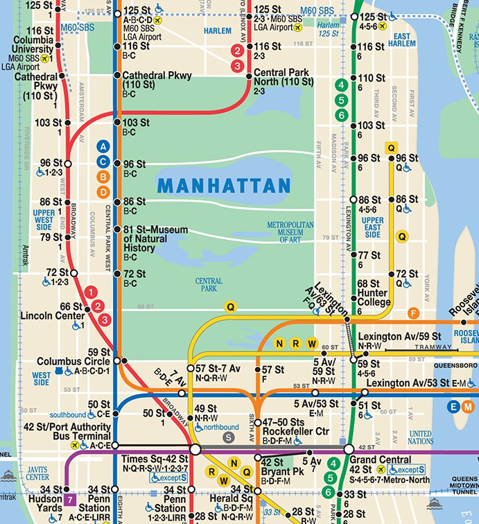
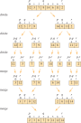

Code
x = None
type(x)NoneTypeDSAN 5500: Data Structures, Objects, and Algorithms in Python
None
\[ \underset{\text{\small{Always 0}}}{\underline{\hspace{16mm}}} \]
x = None
type(x)NoneType Boolean (True or False)
\[ \underset{\{0,1\}}{\underline{\hspace{12mm}}} \]
x = True
type(x)bool Numbers (int, float)
\[ \small{\underset{\small{\{0,1\}}}{\underline{\hspace{8mm}}}~ \underset{\small{\{0,1\}}}{\underline{\hspace{8mm}}}~ \underset{\small{\{0,1\}}}{\underline{\hspace{8mm}}}~ \underset{\small{\{0,1\}}}{\underline{\hspace{8mm}}}~ \underset{\small{\{0,1\}}}{\underline{\hspace{8mm}}}~ \underset{\small{\{0,1\}}}{\underline{\hspace{8mm}}}~ \underset{\small{\{0,1\}}}{\underline{\hspace{8mm}}}~ \underset{\small{\{0,1\}}}{\underline{\hspace{8mm}}}} \]
x = 3
print(type(x))
y = 3.14
type(y)<class 'int'>floatNone: 1 bit, bool: 1 bit, int: 32/64 bits)None: 1 bit (Always 0)
import sys
sys.getsizeof(None)16Boolean (True or False): Exactly 1 bit (0 or 1)
sys.getsizeof(True)28int: 32 or 64 bits (depending on OS)
sys.maxsize9223372036854775807
Why is this happening?
my_beautiful_app.c
time_t current_time = time(NULL);
int num_rows = 13;
bool filled = true;
bool empty = false;
int num_cols = 2;
char username[] = "Jeff";
int i = 0;
int j = None;
void z = NULL;my_beautiful_app.py
import datetime
cur_date = datetime.datetime.now()
num_rows = 13
filled = True
empty = False
num_cols = 2
username = "Jeff"
i = 0
j = None
z = 314
l, and a value v, return the index of l which contains vl contains v more than once? What if it doesn’t contain v at all? What if l is None? What if v is None? What if l isn’t a list at all? What if v is itself a list?


\[ AB = \begin{bmatrix} a_{11} & a_{12} \\ a_{21} & a_{22} \end{bmatrix} \begin{bmatrix} b_{11} & b_{12} \\ b_{21} & b_{22} \end{bmatrix} = \begin{bmatrix} a_{11}b_{11} + a_{12}b_{21} & a_{11}b_{12} + a_{12}b_{22} \\ a_{21}b_{11} + a_{22}b_{21} & a_{21}b_{12} + a_{22}b_{22} \end{bmatrix} \]
\[ AB = \begin{bmatrix} A_{11} & A_{12} \\ A_{21} & A_{22} \end{bmatrix} \begin{bmatrix} B_{11} & B_{12} \\ B_{21} & B_{22} \end{bmatrix} = \begin{bmatrix} A_{11}B_{11} + A_{12}B_{21} & A_{11}B_{12} + A_{12}B_{22} \\ A_{21}B_{11} + A_{22}B_{21} & A_{21}B_{12} + A_{22}B_{22} \end{bmatrix} \]
\[ \begin{align*} m_1 &= (a_{11}+a_{22})(b_{11}+b_{22}) \\ m_2 &= (a_{21}+a_{22})b_{11} \\ m_3 &= a_{11}(b_{12}-b_{22}) \\ m_4 &= a_{22}(b_{21}-b_{11}) \\ m_5 &= (a_{11}+a_{12})b_{22} \\ m_6 &= (a_{21}-a_{11})(b_{11}+b_{12}) \\ m_7 &= (a_{12}-a_{22})(b_{21}+b_{22}) \end{align*} \]
\[ AB = \begin{bmatrix} m_1 + m_4 - m_5 + m_7 & m_3 + m_5 \\ m_2 + m_4 & m_1 - m_2 + m_3 + m_6 \end{bmatrix} \]
\[ AB = \begin{bmatrix} M_1 + M_4 - M_5 + M_7 & M_3 + M_5 \\ M_2 + M_4 & M_1 - M_2 + M_3 + M_6 \end{bmatrix} \]

[5, 2, 4, 6, 1, 3]
| Code | Cost | Times Run | |
|---|---|---|---|
| 1 | for i = 1 to n-1: |
\(c_1\) | \(\widetilde{n}\) |
| 2 | key = A[i] |
\(c_2\) | \(\widetilde{n}\) |
| 3 | # Insert A[i] into sorted subarray A[0:i-1] |
\(0\) | \(\widetilde{n}\) |
| 4 | j = i - 1 |
\(c_4\) | \(\widetilde{n}\) |
| 5 | while j >= 0 and A[j] > key: |
\(c_5\) | \(\sum_{i=2}^n t_i\) |
| 6 | A[j + 1] = A[j] |
\(c_6\) | \(\sum_{i=2}^n(t_i - 1)\) |
| 7 | j = j - 1 |
\(c_7\) | \(\sum_{i=2}^n(t_i - 1)\) |
| 8 | A[j + 1] = key |
\(c_8\) | \(\widetilde{n}\) |
\[ T(n) = c_1\widetilde{n} + c_2\widetilde{n} + c_4\widetilde{n} + c_5\sum_{i=2}^nt_i + c_6\sum_{i=2}^n(t_i - 1) + c_7\sum_{i=2}^n(t_i-1) + c_8\widetilde{n} \]
\[ T(n) = c_1n + c_2\widetilde{n} + c_4\widetilde{n} + c_5{\color{orange}\boxed{\color{black}\sum_{i=2}^nt_i}} + c_6{\color{lightblue}\boxed{\color{black}\sum_{i=2}^n(t_i - 1)}} + c_7{\color{lightblue}\boxed{\color{black}\sum_{i=2}^n(t_i-1)}} + c_8\widetilde{n} \]
\[ \begin{align*} {\color{orange}\boxed{\color{black}\sum_{i=2}^ni}} &= \sum_{i=1}^ni - \sum_{i=1}^1i = \frac{n(n+1)}{2} - 1 \\ {\color{lightblue}\boxed{\color{black}\sum_{i=2}^n(i-1)}} &= \sum_{i=1}^{n-1}i = \frac{(n-1)(n-1+1)}{2} = \frac{n(n-1)}{2} \end{align*} \]
\[ \begin{align*} T(n) = &{\color{gray}\left(\frac{c_5}{2} + \frac{c_6}{2} + \frac{c_7}{2}\right)}{\color{green}n^2} + {\color{gray}\left(c_1 + c_2 + c_4 + \frac{c_5}{2} - \frac{c_6}{2} - \frac{c_7}{2} + c_8\right)}{\color{green}n^1} \\ \phantom{T(n) = }& - {\color{gray}(c_2 + c_4 + c_5 + c_8)}{\color{green}n^0} \end{align*} \]
\[ \begin{align*} T(n) = &\underbrace{{\color{gray}\left(\frac{c_5}{2} + \frac{c_6}{2} + \frac{c_7}{2}\right)}}_{\text{Constant}}\underbrace{\phantom{(}{\color{green}n^2}\phantom{)}}_{\text{Quadratic}} \\ \phantom{T(n) = }&+ \underbrace{{\color{gray}\left(c_1 + c_2 + c_4 + \frac{c_5}{2} - \frac{c_6}{2} - \frac{c_7}{2} + c_8\right)}}_{\text{Constant}}\underbrace{\phantom{(}{\color{green}n^1}\phantom{)}}_{\text{Linear}} \\ \phantom{T(n) = }& - \underbrace{{\color{gray}(c_2 + c_4 + c_5 + c_8)}}_{\text{Constant}}\underbrace{{\color{green}n^0}}_{\text{Constant}} \end{align*} \]
import pandas as pd
import numpy as np
import matplotlib.pyplot as plt
import seaborn as sns
n_vals = [np.power(10, k) for k in np.arange(1, 2.75, 0.25)]
runtime_df = pd.DataFrame({'$n$': n_vals})
runtime_df['$n^2 + 50n$'] = runtime_df['$n$'].apply(lambda x: np.power(x, 2) + 50*x)
runtime_df['$n^2 + 10000$'] = runtime_df['$n$'].apply(lambda x: np.power(x, 2) + 10000)
runtime_df['$O(n)$'] = runtime_df['$n$'].copy()
runtime_df['$O(nlogn)$'] = runtime_df['$n$'].apply(lambda x: x * np.log(x))
runtime_df['$O(n^2)$'] = runtime_df['$n$'].apply(lambda x: np.power(x, 2))
runtime_df['$O(n^2logn)$'] = runtime_df['$n$'].apply(lambda x: np.power(x,2) * np.log(x))
runtime_df['$O(n^3)$'] = runtime_df['$n$'].apply(lambda x: np.power(x, 3))
runtime_df['$O(n^3logn)$'] = runtime_df['$n$'].apply(lambda x: np.power(x, 3) * np.log(x))
# Get the max values, for labeling the ends of lines
max_vals = runtime_df.max().to_dict()
plot_df = runtime_df.melt(id_vars=['$n$'])
#print(plot_df)
style_map = {col: '' if (col == '$n^2 + 50n$') or (col == '$n^2 + 10000$') else (2,1) for col in runtime_df.columns}
fig, ax = plt.subplots(figsize=(11,5))
sns.lineplot(plot_df, x='$n$', y='value', hue='variable', style='variable', dashes=style_map)
#plt.xscale('log')
plt.yscale('log')
# extract the existing handles and labels
h, l = ax.get_legend_handles_labels()
# slice the appropriate section of l and h to include in the legend
ax.legend(h[0:2], l[0:2])
for label, val in max_vals.items():
if (label == '$n$') or (label == '$n^2 + 50n$') or (label == '$n^2 + 10000$'):
continue
if 'logn' in label:
label = label.replace('logn', r'\log(n)')
ax.text(x = max_vals['$n$'] + 2, y = val, s=label, va='center')
# Hide the right and top spines
ax.spines[['right', 'top']].set_visible(False)
plt.show()
n_vals = [np.power(10, k) for k in np.arange(1, 6, 0.5)]
rt_const_df = pd.DataFrame({'$n$': n_vals})
rt_const_df['$20n^2$'] = rt_const_df['$n$'].apply(lambda x: 20*np.power(x,2))
rt_const_df['$n^2$'] = rt_const_df['$n$'].apply(lambda x: np.power(x,2))
rt_const_df['$n^2logn$'] = rt_const_df['$n$'].apply(lambda x: np.power(x,2) * np.power(np.log(x),2))
rt_const_df['$n^3$'] = rt_const_df['$n$'].apply(lambda x: np.power(x,3))
# Get the max values, for labeling the ends of lines
max_vals = rt_const_df.max().to_dict()
plot_df_const = rt_const_df.melt(id_vars=['$n$'])
style_map = {col: '' if (col == '$20n^2$') else (2,1) for col in rt_const_df.columns}
fig_const, ax_const = plt.subplots(figsize=(11,5))
sns.lineplot(plot_df_const, x='$n$', y='value', hue='variable', style='variable', dashes=style_map)
plt.xscale('log')
plt.yscale('log')
# extract the existing handles and labels
h_const, l_const = ax_const.get_legend_handles_labels()
# slice the appropriate section of l and h to include in the legend
ax_const.legend(h_const[0:1], l_const[0:1])
for label, val in max_vals.items():
if (label == '$n$') or (label == '$20n^2$'):
continue
if 'logn' in label:
label = label.replace('logn', r'\log(n)')
ax_const.text(x = max_vals['$n$'] + 10**4, y = val, s=label, va='center')
# Hide the right and top spines
ax_const.spines[['right', 'top']].set_visible(False)
plt.show()



.py files may be easier than .ipynb for development!)
Screen class, another person can write the Button class, and so onclass Bookstore:
def __init__(self, name, location):
self.name = name
self.location = location
self.books = []
def __getitem__(self, index):
return self.books[index]
def __repr__(self):
return self.__str__()
def __str__(self):
return f"Bookstore[{self.get_num_books()} books]"
def add_books(self, book_list):
self.books.extend(book_list)
def get_books(self):
return self.books
def get_inventory(self):
book_lines = []
for book_index, book in enumerate(self.get_books()):
cur_book_line = f"{book_index}. {str(book)}"
book_lines.append(cur_book_line)
return "\n".join(book_lines)
def get_num_books(self):
return len(self.get_books())
def sort_books(self, sort_key):
self.books.sort(key=sort_key)
class Book:
def __init__(self, title, authors, num_pages):
self.title = title
self.authors = authors
self.num_pages = num_pages
def __str__(self):
return f"Book[title={self.get_title()}, authors={self.get_authors()}, pages={self.get_num_pages()}]"
def get_authors(self):
return self.authors
def get_first_author(self):
return self.authors[0]
def get_num_pages(self):
return self.num_pages
def get_title(self):
return self.title
class Person:
def __init__(self, family_name, given_name):
self.family_name = family_name
self.given_name = given_name
def __repr__(self):
return self.__str__()
def __str__(self):
return f"Person[{self.get_family_name()}, {self.get_given_name()}]"
def get_family_name(self):
return self.family_name
def get_given_name(self):
return self.given_namemy_bookstore = Bookstore("Bookland", "Washington, DC")
plath = Person("Plath", "Sylvia")
bell_jar = Book("The Bell Jar", [plath], 244)
marx = Person("Marx", "Karl")
engels = Person("Engels", "Friedrich")
manifesto = Book("The Communist Manifesto", [marx, engels], 43)
elster = Person("Elster", "Jon")
cement = Book("The Cement of Society", [elster], 311)
my_bookstore.add_books([bell_jar, manifesto, cement])
print(my_bookstore)
print(my_bookstore[0])
print("Inventory:")
print(my_bookstore.get_inventory())Bookstore[3 books]
Book[title=The Bell Jar, authors=[Person[Plath, Sylvia]], pages=244]
Inventory:
0. Book[title=The Bell Jar, authors=[Person[Plath, Sylvia]], pages=244]
1. Book[title=The Communist Manifesto, authors=[Person[Marx, Karl], Person[Engels, Friedrich]], pages=43]
2. Book[title=The Cement of Society, authors=[Person[Elster, Jon]], pages=311]sort_alpha = lambda x: x.get_first_author().get_family_name()
my_bookstore.sort_books(sort_key = sort_alpha)
print(my_bookstore.get_inventory())0. Book[title=The Cement of Society, authors=[Person[Elster, Jon]], pages=311]
1. Book[title=The Communist Manifesto, authors=[Person[Marx, Karl], Person[Engels, Friedrich]], pages=43]
2. Book[title=The Bell Jar, authors=[Person[Plath, Sylvia]], pages=244]sort_pages = lambda x: x.get_num_pages()
my_bookstore.sort_books(sort_key = sort_pages)
print(my_bookstore.get_inventory())0. Book[title=The Communist Manifesto, authors=[Person[Marx, Karl], Person[Engels, Friedrich]], pages=43]
1. Book[title=The Bell Jar, authors=[Person[Plath, Sylvia]], pages=244]
2. Book[title=The Cement of Society, authors=[Person[Elster, Jon]], pages=311]

Book
from enum import Enum
class BookType(Enum):
NONFICTION = 0
FICTION = 1
class Book:
def __init__(self, title: str, authors: list[Person], num_pages: int, type: BookType):
self.title = title
self.authors = authors
self.num_pages = num_pages
self.type = type
def __str__(self):
return f"Book[title={self.title}, authors={self.authors}, pages={self.num_pages}, type={self.type}]"joyce = Person("Joyce", "James")
ulysses = Book("Ulysses", [joyce], 732, BookType.FICTION)
schelling = Person("Schelling", "Thomas")
micromotives = Book("Micromotives and Macrobehavior", [schelling], 252, BookType.NONFICTION)
print(ulysses)
print(micromotives)Book[title=Ulysses, authors=[Person[Joyce, James]], pages=732, type=BookType.FICTION]
Book[title=Micromotives and Macrobehavior, authors=[Person[Schelling, Thomas]], pages=252, type=BookType.NONFICTION]# class Book defined as earlier
class FictionBook(Book):
def __init__(self, title, authors, num_pages, characters):
super().__init__(title, authors, num_pages)
self.characters = characters
class NonfictionBook(Book):
def __init__(self, title, authors, num_pages, topic):
super().__init__(title, authors, num_pages)
self.topic = topicjoyce = Person("Joyce", "James")
ulysses = FictionBook("Ulysses", [joyce], 732, ["Daedalus"])
schelling = Person("Schelling", "Thomas")
micromotives = NonfictionBook("Micromotives and Macrobehavior", [schelling], 252, "Economics")
print(ulysses)
print(micromotives)Book[title=Ulysses, authors=[Person[Joyce, James]], pages=732]
Book[title=Micromotives and Macrobehavior, authors=[Person[Schelling, Thomas]], pages=252]Master Theorem: Let \(a > 0\) and \(b > 1\) be constants, and let \(f(n)\) be a driving function defined and nonnegative on all sufficiently large reals. Define \(T(n)\) on \(n \in \mathbb{N}\) by
\[ T(n) = aT(n/b) + f(n) \]
where \(aT(n/b) = a'T(\lfloor n/b \rfloor) + a''T(\lceil n/b \rceil)\) for some \(a' \geq 0\) and \(a'' \geq 0\) satisfying \(a = a' + a''\). Then the asymptotic behavior of \(T(n)\) can be characterized as follows:
Proof. See Cormen et al. (2001), pg. 107-114.
See appendix slide for all 3 cases, if you’re some kind of masochist↩︎